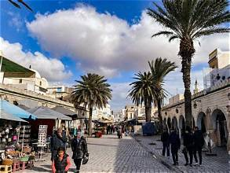
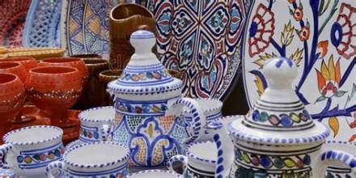
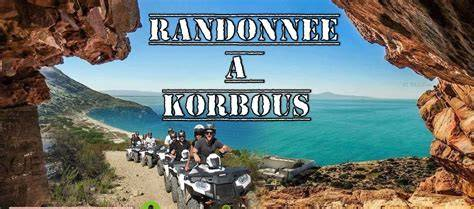

Découverte de la médina

Catégorie : Culture
Prix : 20 TND
Voir les activitésCap Bon Explorer vous invite à découvrir le patrimoine, les savoir-faire et les paysages du Cap Bon. Parcourez nos expériences, choisissez une activité et préparez votre visite grâce à une simulation de réservation simple et transparente.
Découvrir les activitésCap Bon Explorer est une plateforme touristique qui vous invite à découvrir les richesses de la région du Cap Bon. Nous proposons plusieurs expériences culturelles, naturelles et artisanales.
Notre objectif est de vous faire vivre des moments inoubliables à travers des activités variées. Nous souhaitons faciliter votre découverte de la région grâce à un portail simple et accessible.

Catégorie : Culture
Prix : 20 TND
Voir les activités
Catégorie : Artisanat
Prix : 35 TND
Voir les activités
Catégorie : Nature
Prix : 25 TND
Voir les activités